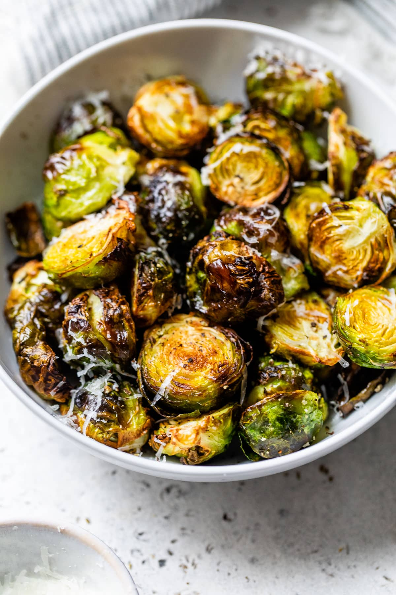

Roasted Brussels Sprouts

Descriptions
These crispy, sweet brussels sprouts will go well with any fall dish. These can be roasted in the oven or using my favorite method, the air fryer. Serve these with your favorite fall meal or bring to your friendsgiving and impress your coworkers and friends.
Ingredients
- 1lb brussels sprouts
- 2 tbsp olive oil
- 1 tbsp balsamic vinegar
- 2 tbsp maple syrup
- salt, to taste
- black pepper, to taste
Steps
- Put brussels sprouts in a bowl and soak in warm water for 10 minutes.
- Drain the bowl and drizzle oil, balsamic vinegar, and maple syrup together.
- Dash salt and pepper over of the brussels sprouts and toss the bowl to evenly coat the brussels sprouts in the glaze and seasoning.
- Place brussels sprouts in the air fryer basket.
- Set the air fryer to 360 degrees and cook for 15-20 minutes.
- Remove the basket half way thru the timer to shake the brussels sprouts.
- Remove brussels sprouts once complete and serve.